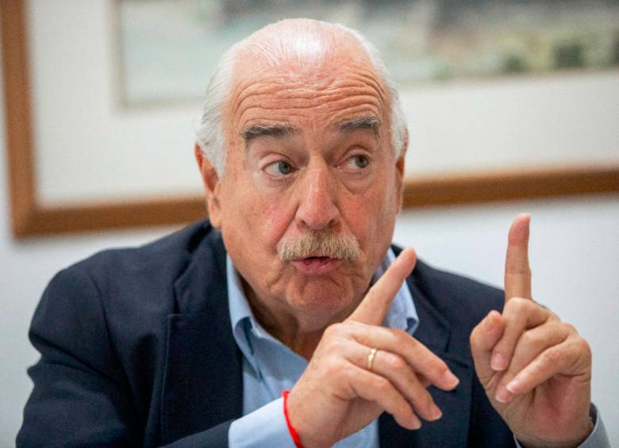
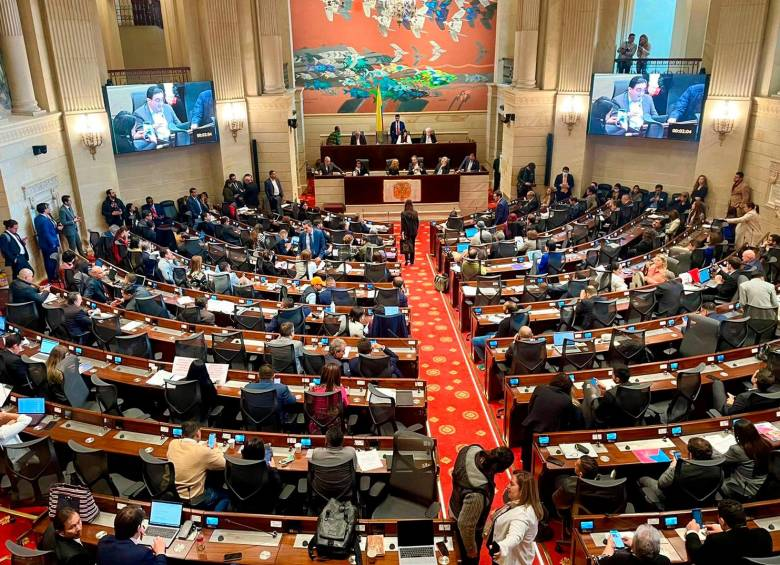
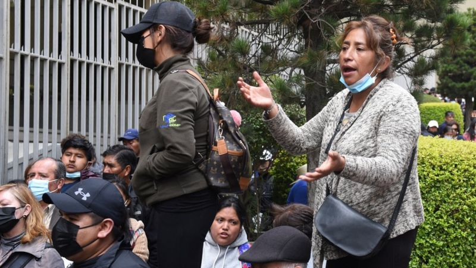
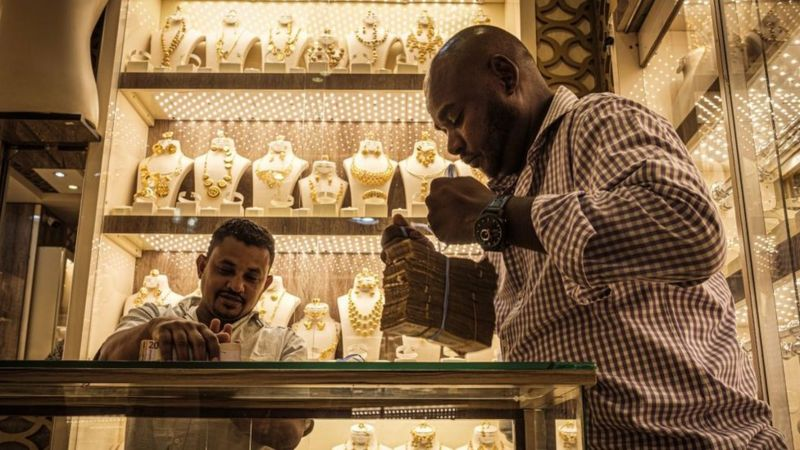

News Blend
Inicio
Categorias
Politica
Deportes
Entrenenimiento
Conocenos
Politica:
Nacional:
 “La paz total es el disfraz para legalizar el narcotráfico”: Pastrana
“Quedó entendido que una cosa es fumigar una mata y otra es perseguir el narcotráfico”
 Crece rechazo a reforma a la salud: 49% está en contra
Asuntos Internacionales:
Empeoran las relaciones diplomáticas entre Nicaragua y varios países de la regióna
Video | Con ataque de risas del público dejan en ridículo al canciller de Rusia en una conferencia
Se confirman las primeras visitas de Estado que tendrá Carlos III como rey. ¿Qué países serán?
Economia:
 Por qué hay escasez de dólares en Bolivia y qué efectos tiene sobre la economía
El increíble error que enfrentó a Pepsi con un joven universitario por un avión militar
 Cómo el oro se volvió una "maldición" para Sudán y qué tiene que ver con los enfrentamientos que han dejado más de 180 civiles muertos
 Empeoran las relaciones diplomáticas entre Nicaragua y varios países de la regióna
Empeoran las relaciones diplomáticas entre Nicaragua y varios países de la regióna
 Video | Con ataque de risas del público dejan en ridículo al canciller de Rusia en una conferencia
Video | Con ataque de risas del público dejan en ridículo al canciller de Rusia en una conferencia
 Se confirman las primeras visitas de Estado que tendrá Carlos III como rey. ¿Qué países serán?
Se confirman las primeras visitas de Estado que tendrá Carlos III como rey. ¿Qué países serán?